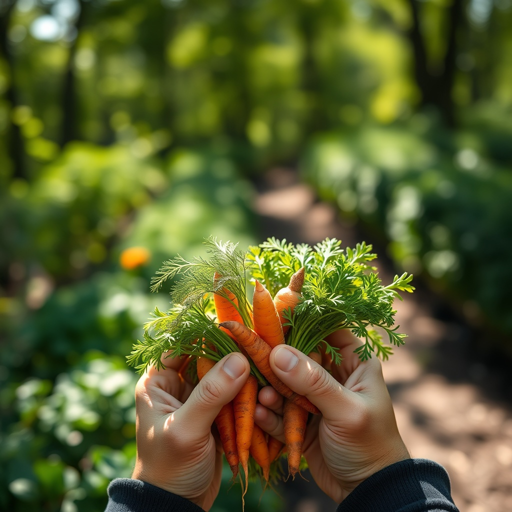
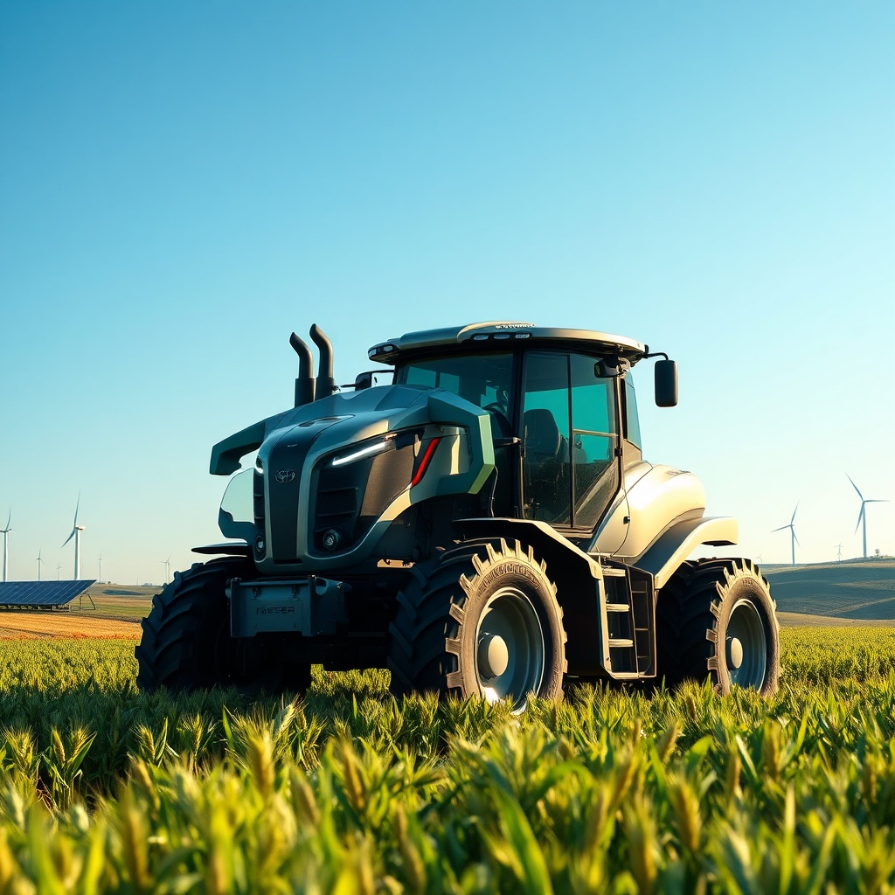

O desafio de alimentar o mundo sem destruir o planeta: encontrando o verdadeiro equilíbrio entre a produção em escala e a preservação do meio ambiente.
Explorar FlashcardsRepresenta toda a cadeia produtiva que vai do campo até a mesa. No Brasil, quase 25% de toda a riqueza gerada (PIB) provém diretamente desse setor essencial.
O país consolidou-se como um dos maiores exportadores de alimentos globais, garantindo milhares de empregos e equilibrando a economia nacional.
O capital gerado no campo impulsiona o desenvolvimento regional, movimentando o comércio, faculdades, conectividade e a infraestrutura local.
Produzir alimentos com responsabilidade exige um novo olhar estratégico sobre os recursos naturais. A sustentabilidade empresarial baseia-se na segurança de que nossas atividades de hoje não comprometerão a subsistência do amanhã.
Utilização de tratores guiados por GPS e satélites para aplicar insumos na quantidade exata, planta por planta, reduzindo o desperdício a zero.
Sensores conectados ao solo determinam o nível de umidade exato, ativando os sistemas automatizados de água apenas quando necessário.
Mapeamento aéreo por meio de fotos térmicas que identificam pragas ou anomalias nas lavouras de forma precoce, evitando perdas em larga escala.
Fazendas modernas transformam resíduos biológicos (biomassa) e restos de culturas em eletricidade, além do uso massivo de painéis solares fotovoltaicos.
Para construir soluções robustas, o setor empresarial deve encarar de frente os desafios e mitigar as consequências negativas das atividades agrícolas tradicionais.
A expansão desordenada de fronteiras agrícolas sobre florestas nativas prejudica gravemente a biodiversidade e altera negativamente o microclima regional.
Sendo a atividade com maior demanda por água doce, o gerenciamento incorreto ou ineficiente da irrigação pode causar secas severas nos leitos locais.
Emissões expressivas de gás metano vindas da pecuária e o uso intensivo de fertilizantes nitrogenados tradicionais aceleram as mudanças climáticas globais.
Estratégia sinérgica que une plantações, pastagens e árvores na mesma propriedade. As árvores oferecem conforto térmico ao gado e sequestram ativamente o CO₂ da atmosfera.
Cultivo realizado diretamente sobre a palhada da colheita anterior, dispensando o revolvimento do solo. Funciona como uma proteção natural, retendo umidade e nutrientes.
Mecanismo financeiro sustentável onde indústrias compensam suas emissões remunerando produtores rurais que mantêm suas áreas de floresta nativa preservadas.
Clique nos cartões abaixo para virar e descobrir os conceitos práticos do agronegócio moderno com imagens demonstrativas.

Gestão otimizada da lavoura através do uso de sensores, GPS e robótica para máxima eficiência.

Unindo produtividade agrícola com preservação dos recursos hídricos e recuperação do solo.
Dúvidas ou sugestões sobre o projeto AGRINHO 2026? Envie sua mensagem.